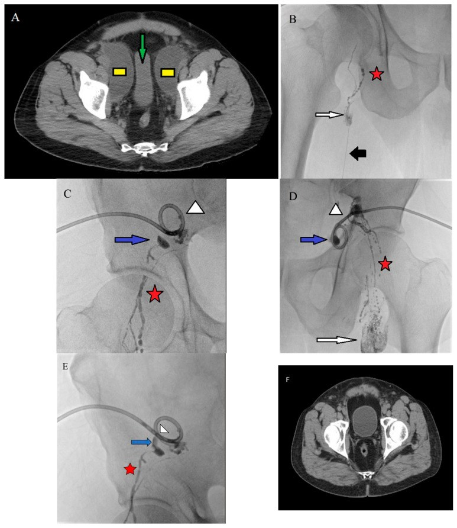
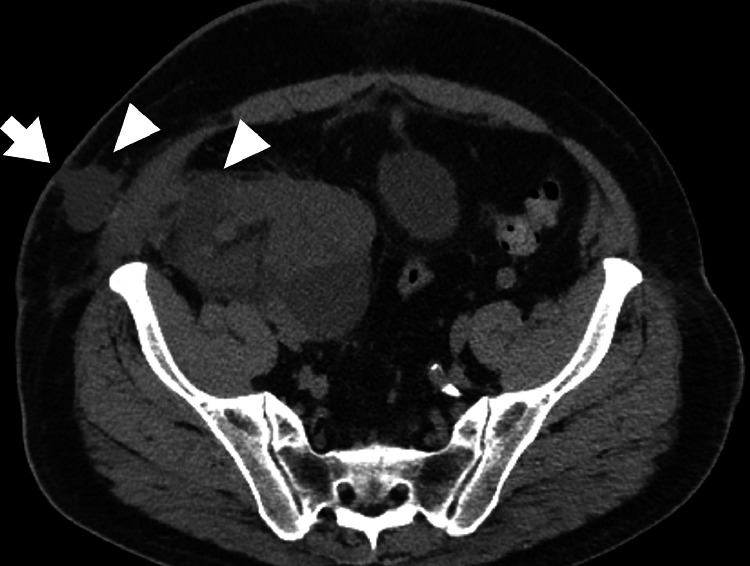
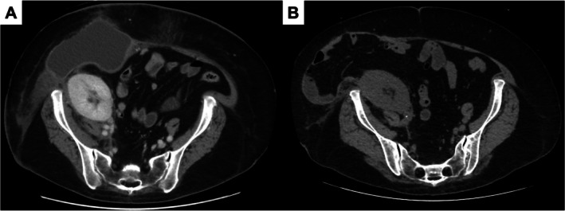

3088 — Nang bạch huyết quanh thận ghép (perigraft lymphocele): khối dịch chèn ép niệu quản & khi nào chọc – xơ hóa – cửa sổ phúc mạc
Tags: pattern:dich-quanh-manh-ghep pattern:khoi-dich pattern:u-nuoc-than pattern:chen-ep vung:than-ghep vung:nieu-quan vung:sau-phuc-mac vung:bang-quang protocol:sieung-am protocol:CT-bung-can-quang protocol:MRI-bung protocol:choc-hut protocol:cua-so-phuc-mac
Mức chắc chắn (certainty): tổng hợp y văn (literature synthesis) — ghép 1 tổng quan (World J Transplant 2026, PMC13250785, CC BY-NC), 1 đoàn hệ 88 ca ghép thận (World J Nephrol 2026, PMC13010633, CC BY-NC), 1 so sánh 47 bệnh nhân/55 nang (J Clin Med 2026, PMC12940964, CC BY 4.0), 2 ca nguyên văn (Radiol Case Rep 2025, PMC12022647, CC BY-NC-ND; IJU Case Rep 2026, PMC12704230, CC BY-NC-ND). Số nào nguồn không đưa thì ghi "chưa rõ".
Bài này trả lời 4 câu hỏi của ca "khối dịch quanh thận ghép" trên siêu âm/CT: (1) Đây là nang bạch huyết hay nước tiểu rò (urinoma), máu tụ, áp-xe? (2) Kích thước nào được theo dõi, kích thước nào phải can thiệp? (3) Chọc hút đơn thuần hay xơ hóa, có cần nút bạch huyết? (4) Khi nào chuyển cửa sổ phúc mạc (mổ nội soi hoặc qua da)? Đây là phần "khối dịch quanh ghép" của 1750 – UTUC thận ghép (khối đặc/khuyết lòng) và 190 – Nội soi niệu quản thận ghép (hẹp niệu quản); phần ứ nước do hẹp miệng nối khác cơ chế.
1. Tổng quan bệnh học – cơ chế hình ảnh
1.1 Nang bạch huyết hình thành thế nào
- Khi ghép thận, các mạch bạch huyết quanh động–tĩnh mạch chậu và rốn thận ghép bị cắt mà không buộc kín. Dịch bạch huyết rỉ vào khoảng sau phúc mạc kín, không có đường thoát, tích lại thành ổ. Sau vài tuần, tổ chức xơ quanh ổ tạo vỏ giả (pseudocapsule) — không có biểu mô lót bên trong, khác nang thận thật.
- Tần suất: sau ghép thận 0,6–38% tùy loạt; 5–10% người ghép có nang có triệu chứng (World J Transplant 2026, PMC13250785). Một đoàn hệ 88 ca: 17% (15/88), khởi phát trung bình 30 ngày (khoảng 30–330 ngày), 67% trong 3 tháng đầu (PMC13010633).
- Vì sao "quanh thận ghép" là vị trí điển hình: thận ghép nằm ngoài phúc mạc ở hố chậu, giữa cơ chậu và bàng quang; mọi dịch rỉ đều bị giữ trong cùng một khoang kín, nên ổ dịch áp sát cực dưới/rốn ghép và lan ra dưới da qua chỗ rách cân nếu vết mổ hở.
1.2 TẠI SAO dịch bạch huyết trông "đơn thuần" trên mọi phương thức
- Bạch huyết là dịch trong, ít tế bào, ít protein (protein thấp hơn huyết tương) → không cản tia: trên CT đo được 0–20 HU, không ngấm thuốc, vỏ mỏng đều; trên MRI T1 thấp, T2 rất cao (gần nước), không hạn chế khuếch tán nhiều (ADC cao).
- So sánh đậm độ quyết định tên gọi (nguyên lý chung của khối dịch sau mổ):
| Bản chất | CT (HU) | T1 / T2 | Dấu hiệu phân biệt |
|---|---|---|---|
| Bạch huyết (lymphocele) | 0–20 | thấp / rất cao | vỏ mỏng, không ngấm, creatinin dịch = huyết thanh |
| Nước tiểu (urinoma) | 0–10 | thấp / rất cao | creatinin dịch > huyết thanh, thường có đường rò từ niệu quản/bể thận |
| Máu tụ cấp | 50–70 | trung gian–cao / thấp | tăng đậm độ, không đồng nhất, vỏ dày |
| Mủ (áp-xe) | 5–25 | thấp / cao | vỏ dày ngấm thuốc, khí trong ổ, sốt |
| Mỡ | −50 đến −100 | cao / cao (bão hòa mỡ) | mất tín hiệu trên fat-sat |
- Xét nghiệm dịch là "chốt loại" rẻ nhất: trong ca minh họa, creatinin dịch 0,9–1,0 mg/dL bằng huyết thanh → loại urinoma (IJU Case Rep 2026, PMC12704230). Nếu nghi rò dưỡng chấp, đo triglycerid dịch (ngưỡng tham chiếu > 110 mg/dL dùng trong bài 1839/1855).
1.3 TẠI SAO nang nhỏ lại nguy hiểm khi to ra
- Khoang quanh ghép có ba cấu trúc bị chèn ép theo thứ tự: niệu quản ghép (đi sau phúc mạc, sát cực dưới) → tĩnh mạch chậu → bàng quang. Chèn niệu quản gây ứ nước thận ghép — creatinin tăng, siêu âm thấy bể thận giãn; chèn tĩnh mạch gây phù chi dưới cùng bên, nguy cơ huyết khối.
- Vì vậy "khối dịch không triệu chứng" chỉ đúng khi đã loại trừ chèn ép: siêu âm phải đo bể thận ghép và Doppler tĩnh mạch chậu, không chỉ đo kích thước ổ dịch.
2. Mẫu hình + chẩn đoán phân biệt theo vị trí (Gamut)
2.1 Gamut theo vị trí quanh thận ghép
- Giữa thận ghép và bàng quang / cực dưới ghép: nang bạch huyết (thường gặp nhất), urinoma từ miệng nối niệu quản–bàng quang, máu tụ sau sinh thiết, áp-xe.
- Rốn ghép / dọc bó mạch chậu: nang bạch huyết sau bóc hạch, giả phình miệng nối động mạch (phải loại trước khi chọc), huyết khối tĩnh mạch.
- Trong nhu mô/quanh bao thận ghép: nang thận ghép đơn độc, ứ nước bể thận (không phải ổ ngoài thận), nang bạch huyết trong xoang, tụ máu dưới bao.
- Dưới da, qua chỗ rách cân: nang bạch huyết lan ra vết mổ (ca PMC12022647: ổ dịch 6,6 × 5,7 × 11,8 cm lan tới dưới da, da hở, rỉ dịch vàng trong).
2.2 Gợi nhớ LUHAS — 5 khối dịch sau ghép
Lymphocele (bạch huyết), Urinoma (nước tiểu), Hematoma (máu tụ), Abscess (áp-xe), Seroma (thanh dịch vết mổ). Ba câu hỏi luôn hỏi: (1) đậm độ bao nhiêu HU? (2) creatinin/triglycerid dịch? (3) có chèn ép niệu quản – tĩnh mạch không?
3. Bảng so sánh phân biệt (ma trận đối chiếu)
| Thực thể (entity) | Hình ảnh điển hình (US/CT/MRI) | Chốt vào (rule-in) | Chốt loại (rule-out) | Gợi ý xác nhận |
|---|---|---|---|---|
| Nang bạch huyết | Ổ 0–20 HU, vỏ mỏng đều, không ngấm, giữa ghép và bàng quang, có vách mảnh; US: trống âm, tăng âm sau | Dịch đơn thuần + creatinin dịch = huyết thanh + bối cảnh sau ghép 2–6 tuần | Creatinin dịch > huyết thanh → urinoma; 50–70 HU → máu tụ | Chọc hút dưới siêu âm: creatinin, triglycerid, cấy |
| Urinoma | Ổ dịch sát miệng nối niệu quản–bàng quang hoặc cực dưới, có thể thấy đường rò trên CT trễ 10–15 phút | Creatinin dịch cao hơn huyết thanh, hoặc thuốc cản quang bài tiết vào ổ trên thì trễ | Creatinin dịch = huyết thanh → nang bạch huyết | CT niệu quản có thì trễ / MR urography |
| Máu tụ | 50–70 HU (cấp), đồng nhất hoặc có mức; không ngấm | Tăng đậm độ trên CT không cản quang + sau sinh thiết/chọc | 0–20 HU → dịch đơn thuần | So sánh HU trước/sau; theo dõi thể tích |
| Áp-xe | Vỏ dày, ngấm thuốc, khí trong ổ (không bắt buộc), dịch không đồng nhất; hạn chế khuếch tán trên DWI | Sốt + đau + vỏ ngấm thuốc | Vỏ mỏng không ngấm + không sốt → nang bạch huyết | Cấy dịch, kháng sinh; dẫn lưu |
| Seroma vết mổ | Ổ dịch dưới da, nông, theo vết mổ, không liên quan rốn ghép | Vị trí dưới cân, nông, sau mổ ngay | Sâu, sát rốn ghép → nang bạch huyết | US: độ sâu so với cân |
| Ứ nước bể thận ghép | Bể thận giãn hình "bàn tay"/nhiều nhánh, thông với niệu quản; vỏ thận mỏng | Cấu trúc dạng ống phân nhánh trong xoang thận, không phải ổ đơn độc | Ổ ngoài thận đẩy thận sang bên → nang | US Doppler + CT trễ |

Nang bạch huyết chậu hai bên (A, ô vàng) làm hẹp ngang bàng quang (mũi tên xanh); B–E: chụp bạch huyết trong hạch + can thiệp; F: CT sau điều trị. Nguồn: J Clin Med 2026 (PMC12940964), Fig. 2, CC BY 4.0.4. Protocol chụp + ngưỡng xử trí
4.1 Trình tự chẩn đoán
- Siêu âm là bước đầu (rẻ, không bức xạ, đo được vỏ/vách và bể thận). Đánh giá: kích thước 3 chiều, vách, cặn, Doppler tĩnh mạch chậu cùng bên, độ giãn bể thận ghép.
- CT bụng–chậu có cản quang: thì không cản quang (đo HU, tìm máu tụ/vôi), thì tĩnh mạch cửa (vỏ, mô quanh), thì trễ 10–15 phút (rò nước tiểu). Lát ≤ 2 mm vùng hố ghép.
- MRI khi dịch phức tạp, nghi u/nang thận ghép hoặc cần phân biệt vách: T1, T2, DWI/ADC, T1 fat-sat sau tiêm; nang bạch huyết không ngấm thuốc, không có thành phần đặc.
- Chọc hút chẩn đoán khi còn nghi ngờ: gửi creatinin, triglycerid, tế bào, cấy. Không chọc khi chưa loại giả phình (Doppler) và rối loạn đông chưa sửa.
4.2 Ngưỡng và bậc thang điều trị
- < 5 cm, không triệu chứng: theo dõi siêu âm định kỳ; đa số tự thoái triển trong vài tháng (PMC13250785). Không can thiệp chỉ vì "có dịch".
- Có triệu chứng hoặc chèn ép (ứ nước, phù chi, đau): chọc hút dưới siêu âm là bước đầu — nhưng tái phát tới 59% nếu chỉ hút (PMC13250785).
- Xơ hóa ổ (sclerotherapy): povidone-iodine, ethanol hoặc doxycycline sau khi hút; trung bình 1–4 lần, có ca tới 14 lần (PMC12940964). Chống chỉ định khi ổ thông với đường niệu (nguy cơ xơ hóa niệu quản).
- Thêm nút bạch huyết (intranodal lymphangiography + lymphatic embolization, INL–LE): trong 55 nang (47 bệnh nhân), phối hợp INL–LE giảm có ý nghĩa dịch ngày 3, số lần xơ hóa và thời gian lưu catheter (p < 0,001); trên phân tích đa biến, INL–LE gắn độc lập với thời gian lưu catheter ngắn hơn (β = −0,803; p = 0,001) (PMC12940964).
- Cửa sổ phúc mạc (peritoneal fenestration): khi thất bại/thể khó. Nội soi là chuẩn; cửa sổ qua da bằng bóng dưới CT là thay thế ở ca khó mổ: đặt catheter 10 Fr, rút sau 3 tuần, không tái phát trong 2,5 năm (PMC12704230).
flowchart TD
A[Khối dịch quanh thận ghép] --> B[Siêu âm: kích thước, vách, Doppler, bể thận]
B --> C{Chèn ép hoặc có triệu chứng?}
C -->|Không và dưới 5 cm| D[Theo dõi siêu âm định kỳ]
C -->|Có| E[Chọc hút chẩn đoán: creatinin, triglycerid, cấy]
E --> F{Creatinin dịch cao hơn huyết thanh?}
F -->|Có| G[Urinoma - tìm đường rò, xử lý niệu quản]
F -->|Không| H[Xơ hóa ổ sau hút]
H --> I{Tái phát hoặc lưu catheter kéo dài?}
I -->|Có| J[Thêm nút bạch huyết INL-LE]
I -->|Không| K[Theo dõi]
J --> L{Còn tái phát?}
L -->|Có| M[Cửa sổ phúc mạc: nội soi hoặc qua da]
L -->|Không| K
5. Biến thể bình thường và cạm bẫy
- "Dịch quanh ghép" sau mổ 1–2 tuần là bình thường: ổ dịch nhỏ, vỏ chưa rõ, không chèn ép — không gọi là nang bạch huyết nếu chưa có vỏ và chưa tồn tại > 2–3 tuần.
- Cạm bẫy 1 — chọc/xơ hóa urinoma: creatinin dịch không được bỏ qua. Xơ hóa một ổ thông với đường niệu có thể làm hẹp/xơ niệu quản ghép.
- Cạm bẫy 2 — tưởng ứ nước là nang: ứ nước bể thận có cấu trúc ống phân nhánh, bờ trong là niệu mô; nang là ổ đơn độc đẩy thận sang bên. Đo bể thận trên siêu âm trước và sau khi bàng quang rỗng.
- Cạm bẫy 3 — bỏ sót giả phình: khối dịch đập theo mạch, có phổ xoáy (yin-yang) trên Doppler → tuyệt đối không chọc; cần CTA và can thiệp mạch.
- Cạm bẫy 4 — máu tụ cấp giả dịch: bệnh nhân thiếu máu/đông máu kém, ổ "dịch" 20–35 HU có thể là máu tụ; đo HU trên CT không cản quang và chụp lại sau 24–48 giờ.
- Cạm bẫy 5 — vách mảnh trong nang không phải u: vách mảnh < 2 mm, không ngấm, không có nốt đặc → lành tính; chỉ sinh thiết khi có thành phần đặc ngấm thuốc.
- Cạm bẫy 6 — hút xong "hết dịch" rồi kết luận khỏi: nang bạch huyết tái tích nhanh trong vài ngày vì còn rò bạch huyết hoạt động; cần kế hoạch xơ hóa/nút chứ không hút lặp vô ích.
6. Tự lượng giá — Blind Quiz
Ca 1 — Nam 45 tuổi, ghép thận 6 tuần, creatinin tăng nhẹ, siêu âm thấy ổ dịch quanh cực dưới ghép.

- Gợi ý lâm sàng: vết mổ hở, rỉ dịch vàng trong; không sốt.
- Câu hỏi: ổ dịch nằm ở khoang nào? Đậm độ bao nhiêu là "dịch"? Ba chẩn đoán phân biệt và xét nghiệm nào chốt?
Bấm để hiện đáp án (findings + chẩn đoán)
- Findings: ổ dịch lớn 6,6 × 5,7 × 11,8 cm quanh thận ghép, lan ra mô dưới da qua chỗ rách cân, da không liên tục (mũi tên/đầu mũi tên trắng).
- Chẩn đoán: nang bạch huyết quanh thận ghép có rò ra vết mổ — dịch đơn thuần, không sốt, không khí trong ổ.
- Chốt loại: creatinin dịch = huyết thanh (urinoma), 50–70 HU (máu tụ), vỏ dày ngấm + khí (áp-xe).
- Nguồn ảnh: Radiol Case Rep 2025 (PMC12022647), Fig. 1, CC BY-NC-ND 4.0 (nguyên bản, không cắt/ghép).
Ca 2 — Nữ 60 tuổi, ghép thận 2 tuần, nang bạch huyết dai dẳng đã hút 4 lần, mỗi lần 500–750 mL.

- Câu hỏi: Vì sao hút lặp không khỏi? Hai lựa chọn can thiệp tiếp theo? Tiêu chí thành công?
Bấm để hiện đáp án (findings + chẩn đoán)
- Findings: (A) trước — nang dưới da lớn, hở cân; (B) sau 6 tháng — ổ dịch biến mất, không tái phát.
- Chẩn đoán: nang bạch huyết khó trị do còn rò bạch huyết hoạt động → cửa sổ phúc mạc qua da bằng bóng (catheter 10 Fr, rút sau 3 tuần), không tái phát 2,5 năm.
- Vì sao hút thất bại: hút chỉ lấy dịch, không đóng nguồn rò; cửa sổ phúc mạc cho dịch thoát vào ổ phúc mạc — nơi hấp thu.
- Nguồn ảnh: IJU Case Rep 2026 (PMC12704230), Fig. 3, CC BY-NC-ND 4.0 (nguyên bản).
Ca 3 — Nam 52 tuổi, sau bóc hạch chậu vì ung thư bàng quang, siêu âm thấy hai ổ dịch chậu, bàng quang bị hẹp ngang.
- Câu hỏi: Đây là nang hay ứ nước? Dấu hiệu nào trên CT chứng minh chèn ép? Bậc thang điều trị?
Bấm để hiện đáp án (findings + chẩn đoán)
- Findings: hai ổ dịch đồng nhất, vỏ mỏng ở hai bên chậu (ô vàng); bàng quang hẹp ngang do chèn (mũi tên xanh).
- Chẩn đoán: nang bạch huyết chậu hai bên sau bóc hạch — không phải ứ nước vì ổ nằm ngoài đường niệu, không thông với bể thận.
- Điều trị: chọc hút + xơ hóa; nếu dai dẳng → thêm nút bạch huyết INL–LE (giảm dịch ngày 3, số lần xơ hóa, thời gian catheter; p < 0,001); cuối cùng là cửa sổ phúc mạc.
- Nguồn ảnh: J Clin Med 2026 (PMC12940964), Fig. 2, CC BY 4.0.
Bài liên quan chéo
- 1750 – UTUC ở bệnh nhân thận ghép (khối đặc/khuyết lòng, không phải khối dịch)
- 190 – Nội soi niệu quản thận ghép (hẹp niệu quản, ứ nước)
- 3011 – Biến chứng niệu quản sau ghép thận (hẹp miệng nối & rò nước tiểu)
- 1839 – Chylothorax sau cắt/ghép gan (ngưỡng triglycerid dịch > 110 mg/dL)
- 1855 – LVA và chuyển hướng dòng ống ngực (can thiệp bạch huyết)
Ảnh
images/3088_nang-bach-huyet_CT_PMC12940964-Fig2.jpg— CT + chụp bạch huyết + CT sau điều trị, CC BY 4.0.images/3088_nang-bach-huyet_CT_PMC12022647-Fig1.jpg— CT hố chậu, CC BY-NC-ND 4.0 (nguyên bản).images/3088_nang-bach-huyet_CT_PMC12704230-Fig3.jpg— CT trước/sau cửa sổ phúc mạc, CC BY-NC-ND 4.0 (nguyên bản).- Chi tiết nguồn + giấy phép:
images/CREDITS.md; link gốc trongsources.md.
Không dùng để chẩn đoán độc lập khi chưa có người hướng dẫn.